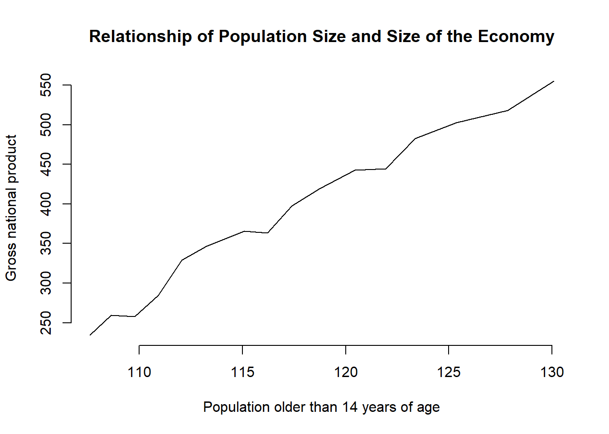

2.2 Solutions
2.2.1 Exercise 2
Use the names() function to display the variable names of the longley dataset.
names(longley)[1] "GNP.deflator" "GNP" "Unemployed" "Armed.Forces"
[5] "Population" "Year" "Employed" 2.2.2 Exercise 3
Use square brackets to access the 4th column of the dataset.
longley[, 4] [1] 159.0 145.6 161.6 165.0 309.9 359.4 354.7 335.0 304.8 285.7 279.8
[12] 263.7 255.2 251.4 257.2 282.72.2.3 Exercise 4
Use the dollar sign to access the 4th column of the dataset.
longley$Armed.Forces [1] 159.0 145.6 161.6 165.0 309.9 359.4 354.7 335.0 304.8 285.7 279.8
[12] 263.7 255.2 251.4 257.2 282.7Note: There is yet another way to access the 4th column of the dataset. We can put the variable name into the square brackets using quotes like so:
longley[, "Armed.Forces"] [1] 159.0 145.6 161.6 165.0 309.9 359.4 354.7 335.0 304.8 285.7 279.8
[12] 263.7 255.2 251.4 257.2 282.72.2.4 Exercise 5
Access the two cells from row 4 and column 1 and row 6 and column 3.
# row 4, column 1
longley[4, 1][1] 89.5# row 6, column 3
longley[6, 3][1] 193.22.2.5 Exercise 6
Using the longley data produce a line plot with GNP on the y-axis and population on the x-axis.
plot(
y = longley$GNP, # y-axis variable
x = longley$Population, # x-axis variable
type = "l", # produce a line plot
bty = "n", # no box around our plot
main = "Relationship of Population Size and Size of the Economy"
)
2.2.6 Exercise 7
Use the help function to find out how to label the y-axis “wealth” and the x-axis “population”.
?plotThe ? is short for the help() function. We see that the xlab argument lets us label the x-axis and the ylab argument lets us label the y-axis. We do so below.
plot(
y = longley$GNP, # y-axis variable
x = longley$Population, # x-axis variable
type = "l", # produce a line plot
bty = "n", # no box around our plot
main = "Relationship of Population Size and Size of the Economy",
xlab = "Population older than 14 years of age",
ylab = "Gross national product"
)
2.2.7 Exercise 8
Create a boxplot showing the distribution of IMMBRIT by each party in the data and plot these in one plot next to each other.
To do that, we load the non-western foreigners dataset first.
Note: You have to set your working directory that R operates in to the location of the dataset.
# load perception of non-western foreigners data
load("BSAS_manip.RData")We have five parties in our dataset. We plot 5 boxplots next to each other. Hence, we separate the plot window into 1 row and 5 columns.
# plot window to 1 row and 5 columns
par(mfrow = c(1, 5))
boxplot(data2$IMMBRIT[ data2$Cons == 1 ], frame.plot = FALSE, col = "blue", xlab = "Tories")
boxplot(data2$IMMBRIT[ data2$Lab == 1 ], frame.plot = FALSE, col = "red", xlab = "Labour")
boxplot(data2$IMMBRIT[ data2$SNP == 1 ], frame.plot = FALSE, col = "yellow", xlab = "SNP")
boxplot(data2$IMMBRIT[ data2$Ukip == 1 ], frame.plot = FALSE, col = "purple", xlab = "Ukip")
boxplot(data2$IMMBRIT[ data2$BNP == 1 ], frame.plot = FALSE, col = "darkblue", xlab = "BNP")
2.2.8 Exercises 9 and 10
We combine the answer to questions 9 and 10.
Question from 9: Is there a difference between women and men in terms of their subjective estimation of foreingers?
Question from 10: What is the difference between women and men?
Women’s subjective estimate is the mean of IMMBRIT across women and equally, men’s subjective estimate is the mean of IMMBRIT over all men. Let’s get these numbers with the mean function and the square brackets.
womens.mean <- mean(data2$IMMBRIT[ data2$RSex == 2 ])
womens.mean[1] 32.79159mens.mean <- mean(data2$IMMBRIT[ data2$RSex == 1 ])
mens.mean[1] 24.53766The difference between women and men is the difference in means. Let’s take the difference between them. The difference in means is often referred to as the first difference.
first.difference <- womens.mean - mens.mean
first.difference[1] 8.253937Let’s round that number. We don’t like to see so many decimal places. You should usually present precision up to the second decimal place. We can use the round() function. The first argument is number to round and the second is the amount of digits.
round(first.difference, 2)[1] 8.25We do find a difference between men and women. On average, women’s estimate of the number of non-western foreingers is 8.25 greater than men’s estimate.
At this point we have established that there is a difference in our sample. Samples are subject to sampling variability. That means, we cannot yet say that the difference is systematic, i.e., British women, generally, think that there are more non-western foreingers than British men.
2.2.9 Exercises 11
Could you form a hypothesis out of the relationship that you see if any exists?
Our testable hypothesis could be: Women tend to overestimate the number of foreigners more than men. In our sample, women tend to estimate on the number of foreingers at